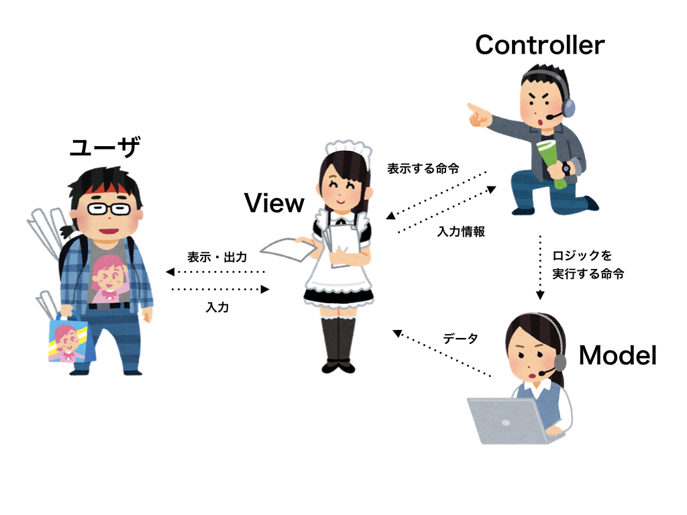
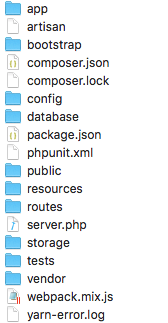

STEP2-1 フレームワークについて
フレームワークとは何か
フレームワークとは、アプリケーションの開発をしやすくするための、プログラムのひな形のことをいいます。開発者が実装したプログラムをまとめて制御して動くようにしてくれるものです。
日本語訳だと「枠組み」「骨組み」「構造」などといった意味があります。
フレームワークを用いることのメリットは、
- プログラムの見通しが良くなる
- 機能追加がしやすくなる
- 開発のスピードが上がる
などです。 しかし、フレームワークを習得するまでに時間がかかるなど、デメリットもあります。
代表的なPHPフレームワーク
代表的なPHPのフレームワークには、
などがあります。 今回は、現在最も勢いのあるフレームワーク、Laravelを使用します。
Laravelの基本的な構造
LaravelはMVCというアーキテクチャを使っています。 MVCとは、UIを持つアプリケーションのアーキテクチャです。 Model, View, Controllerという役割で分けて開発を行うことで、機能追加がしやすくなり、効率的にアプリケーション開発を行うことができます。
MVCとは
MVCは、
- Model
- View
- Controller
の３つの要素で構成されています。
それぞれの役割について説明していきます。
Model
データベースの操作など、ロジックを担当します。 受け取ったデータの処理や、データベースへの保存などの操作について記述しましょう。
View
実際にユーザが見る画面や、ユーザからのデータの受け取り、処理結果の出力を行います。 画面に表示させたい内容や、ユーザ、Modelからのデータの受け取りに関する処理を記述しましょう。
Controller
Viewから受け取ったデータをどのModelに渡すか、Modelの処理の結果からどのViewを表示させるかを判断します。 ModelとViewを指定する司令塔のような役割を担っています。

このようにそれぞれの機能の役割を明確にすることで効率的に開発することができます。
Laravelのディレクトリ構成
Laravelでは各機能ごとのディレクトリが用意されていて、ルールに沿ってディレクトリを分けることでわかりやすい構成で開発できるようになっています。

Laravelのディレクトリ構成についてはこちらに詳しく載っているので参考にしてみてください。
ただ、必ずしもここに書いてある通りにディレクトリを分ける必要はないので、自分で開発しやすいようにカスタマイズしてみるのも良いでしょう。
また、Laravelについては、Laravelの公式ドキュメントに詳しく載っているので、そちらも見てみるといいかもしれません。